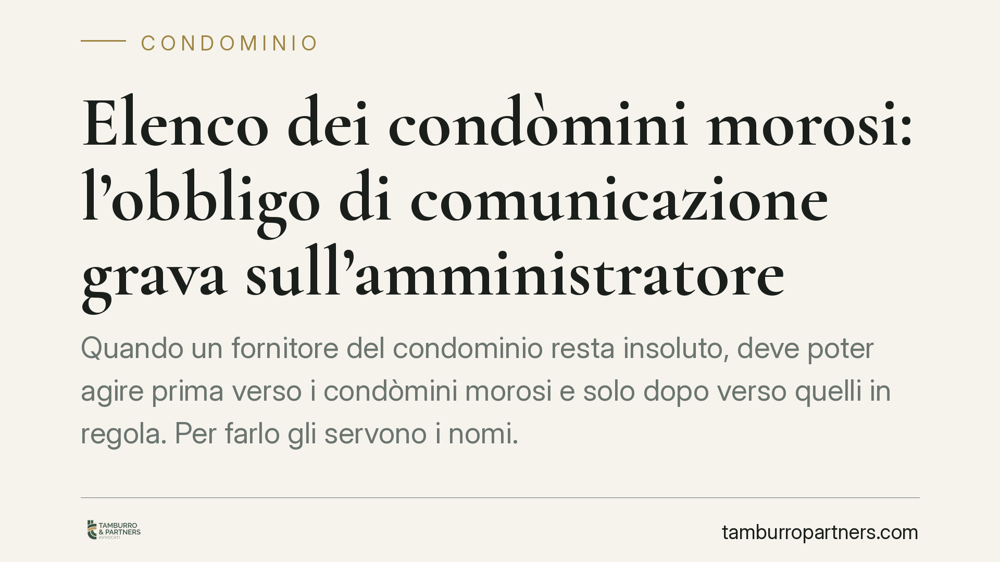

Elenco dei condòmini morosi: l'obbligo di comunicazione grava sull'amministratore
Quando un fornitore del condominio resta insoluto, deve poter agire prima verso i condòmini morosi e solo dopo verso quelli in regola. Per farlo gli servono i nomi. Una recente pronuncia della Cassazione ribadisce che l'obbligo di comunicare questi dati ricade personalmente sull'amministratore, con conseguente responsabilità in caso di rifiuto o ritardo ingiustificati.

Il caso e la decisione
Un creditore del condominio, rimasto insoddisfatto, chiede all'amministratore l'elenco dei condòmini morosi per potersi rivalere su di loro. L'amministratore non trasmette i dati o li fornisce tardivamente. Chi risponde di questa omissione: l'amministratore in proprio o il condominio come ente di gestione?
Secondo una recente pronuncia della Corte di Cassazione, l'obbligo di comunicazione previsto dall'art. 63 disp. att. c.c. grava direttamente sull'amministratore, quale soggetto che gestisce i rapporti con i terzi e detiene i dati contabili. Ne discende che l'eventuale inadempimento può generare una responsabilità personale dell'amministratore verso il creditore pregiudicato, e non soltanto dell'ente condominiale.
Inquadramento normativo
Il riferimento centrale è l'art. 63 delle disposizioni di attuazione del codice civile. Il comma 1 consente al creditore, munito di titolo esecutivo, di agire direttamente nei confronti dei condòmini morosi. Il comma 2 stabilisce un ordine preciso: il creditore può rivolgersi ai condòmini in regola con i pagamenti solo dopo aver tentato l'escussione di quelli morosi.
Questo meccanismo di escussione graduale ha una conseguenza pratica immediata: il creditore, per aggredire prima i morosi, deve sapere chi sono. La comunicazione dei relativi dati non è quindi un adempimento formale, ma il presupposto che rende concretamente azionabile l'ordine di preferenza voluto dalla legge.
Il dovere di fornire queste informazioni si colloca tra le attribuzioni gestorie dell'amministratore, che l'art. 1130 c.c. individua nella riscossione dei contributi e nella tenuta della contabilità condominiale. È l'amministratore, infatti, a disporre materialmente dei dati sulle posizioni debitorie dei singoli. Sul piano della diligenza e della responsabilità nell'incarico resta inoltre rilevante l'art. 1129 c.c.
Implicazioni pratiche
Per l'amministratore il principio significa che non può trincerarsi dietro lo schermo del condominio: il rifiuto o il ritardo non giustificato nel fornire l'elenco espone lui personalmente. Al tempo stesso, la comunicazione va calibrata con attenzione, perché riguarda dati personali di terzi.
Per il condòmino in regola la pronuncia rafforza una tutela: prima di subire l'azione del creditore, questi deve aver tentato di escutere i morosi. La corretta individuazione dei morosi è il meccanismo che evita che chi ha pagato risponda al posto di chi non ha pagato.
Per il creditore la decisione conferma la possibilità di sollecitare direttamente all'amministratore i dati necessari, e di considerarlo responsabile in proprio se l'inerzia gli preclude o ritarda il recupero.
Resta centrale il tema del trattamento dei dati personali. La comunicazione deve limitarsi alle informazioni effettivamente necessarie all'azione di recupero — identità dei morosi ed entità del debito — in applicazione del principio di minimizzazione. Trasmettere dati ulteriori o non pertinenti è un rischio da evitare.
Cosa fare in concreto
Se sei amministratore:
- Riscontra senza ritardo le richieste dei creditori muniti di titolo, limitando i dati a quanto strettamente necessario al recupero.
- Documenta per iscritto data e contenuto di ogni comunicazione, così da poter provare l'avvenuto adempimento.
- Tieni aggiornato il rendiconto delle morosità, in modo da rispondere con dati certi e verificabili.
Se sei condòmino:
- Verifica di essere in regola con i versamenti e conserva le ricevute di pagamento.
- Se ti viene richiesto il pagamento da un creditore, accerta che sia stata prima tentata l'escussione dei condòmini morosi.
Se sei creditore:
- Richiedi formalmente all'amministratore l'elenco dei morosi prima di agire contro i condòmini in regola.
- Conserva la richiesta e l'eventuale mancato riscontro: possono rilevare ai fini di una responsabilità personale dell'amministratore.
Consigliamo, in ogni caso, di verificare la posizione concreta alla luce della documentazione specifica, poiché l'esito dipende dai titoli, dai tempi e dalla gestione contabile del singolo condominio.
---
*Contributo informativo a cura di Tamburro & Partners - Avv. Giuseppe Tamburro. Non costituisce parere legale.*
Ogni condominio ha una storia a sé.
Se gestisci un'amministrazione e vuoi un confronto su una specifica questione condominiale, scrivi allo studio. Ti rispondiamo entro un giorno lavorativo.